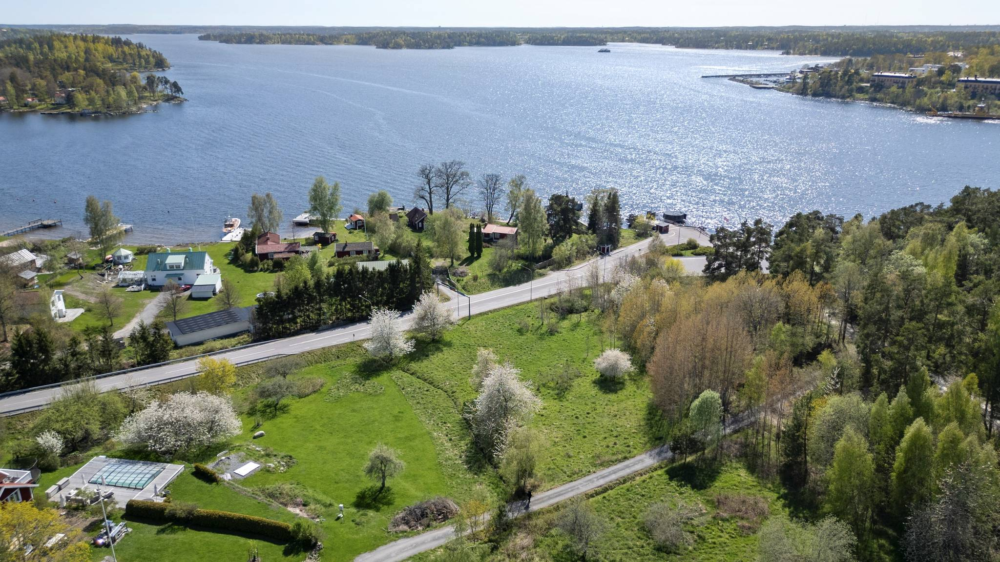

Vår historia
Etablerad 1987 i Gustavsberg
Värmdö Färgbod grundades 1987 i hjärtat av Gustavsberg på Värmdö, beläget mellan Vaxholm i norr och Saltsjöbaden i söder. Vi är en av Stockholms skärgårds mest etablerade och älskade inredningsbutiker.

Under nästan fyra decennier har vi byggt upp ett av Sveriges bredaste inredningssortiment — allt från klassiska och moderna färgkollektioner till exklusiva tapeter, designtextilier, kakel, mattor och solskydd. Vi arbetar med allt från budgetpriser till lyxmärken, och vår styrka ligger i att kunna erbjuda något för alla:
- ✓ Ett av Sveriges bredaste urval av färger, tapeter och textilier
- ✓ Personlig inredningsrådgivning från erfarna experter
- ✓ Egen syateljé för skräddarsydda gardiner och textilier
- ✓ Färgblandning i butik — välj bland tusentals nyanser
- ✓ Tjänster som färgsättning och fasadbesiktning
Vi är stolta över att servera både privatpersoner och proffs, och vi älskar att hjälpa dig från första idé till färdigt resultat.